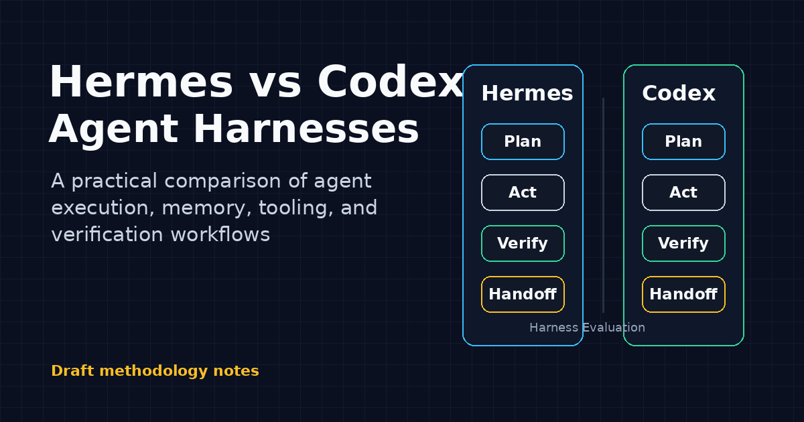
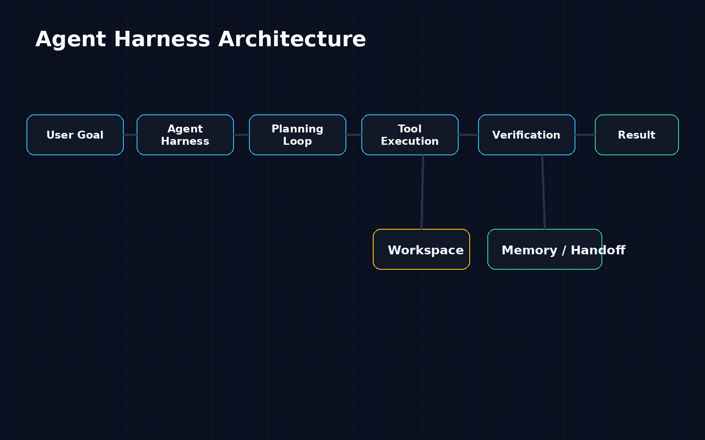
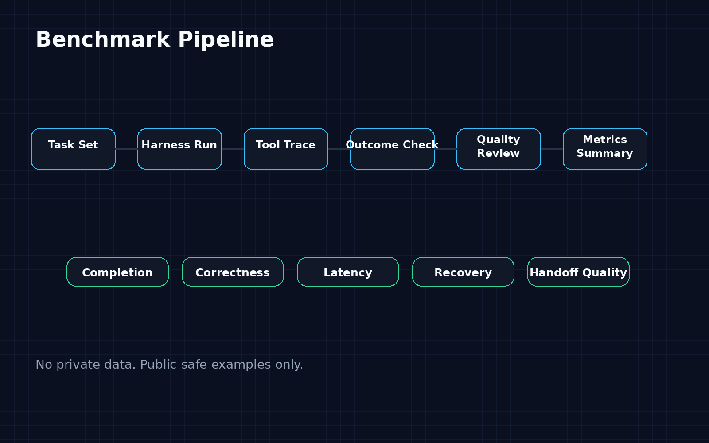

Agent Harnesses as Operational Control Systems
Ahmed Mahmoud · ZalaStack · Calgary, Alberta, Canada · @mizoz
Why Codex needs a durable lane runner for serious parallel work. The paper frames agent throughput as a harness, liveness, provenance, and process-control problem rather than a model-quality question alone.
This is a draft case-study and benchmark design, not a benchmark-results paper. Quantitative claims wait for paired randomized evaluation with synthetic fixtures.

Core Claim Boundary
Hermes exposed clearer lane state, receipts, watcher status, and operator review surfaces in the observed workflow.
Codex exposes documented execution primitives: CLI, exec mode, subagents, worktrees, tools, sandboxing, and local verification.
The proposed test is paired, randomized, anonymized, and limited to synthetic or sanitized fixtures.
Launch Assets

